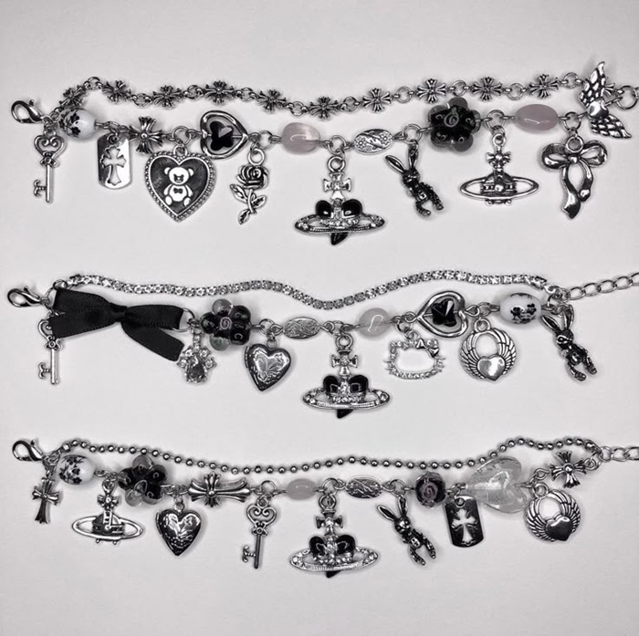
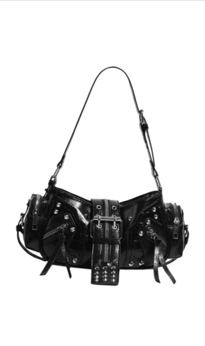
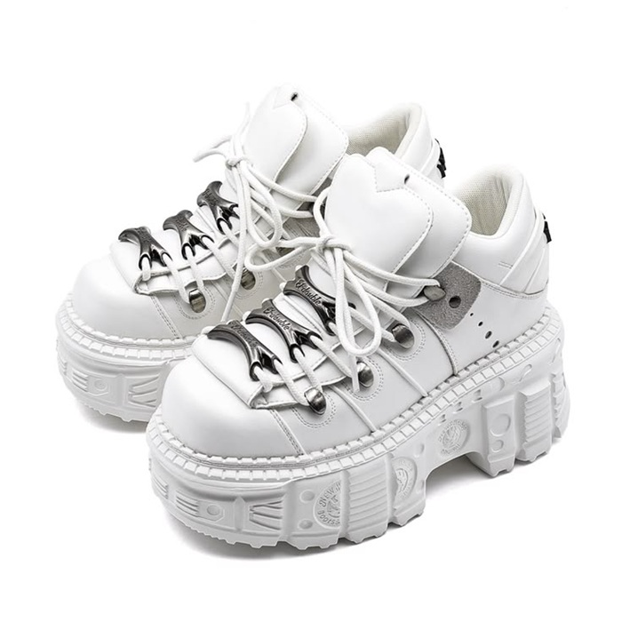

お気に入りアイテム紹介
シルバーアクセサリー

シンプルなコーディネートでも存在感を出してくれるお気に入りのアクセサリーです。 リングやネックレスを組み合わせることで、統一感のあるスタイルを楽しめます。
レザーバッグ

普段使いしやすい黒のレザーバッグです。 どんな服装にも合わせやすく、収納力もあるので毎日のコーデに欠かせません。
厚底ブーツ

コーディネート全体を引き締めてくれるアイテムです。 パンツスタイルにもスカートにも合わせやすく、季節を問わず活躍しています。
お気に入りアイテムランキング
- シルバーアクセサリー
- 厚底スニーカー
- レザーバッグ